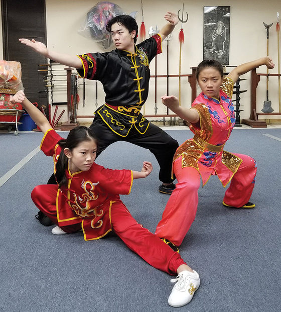
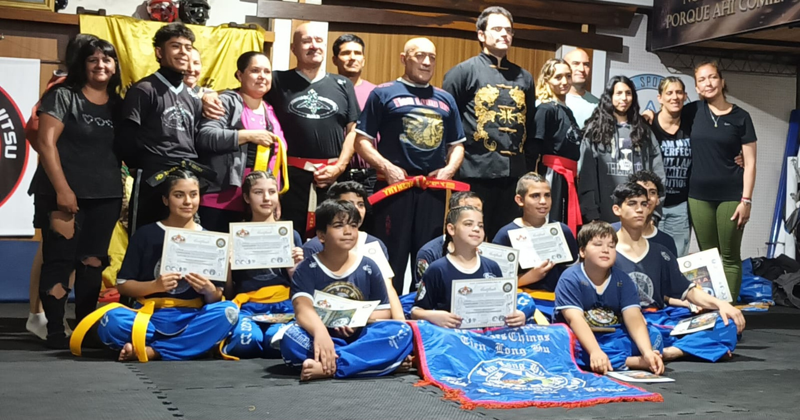
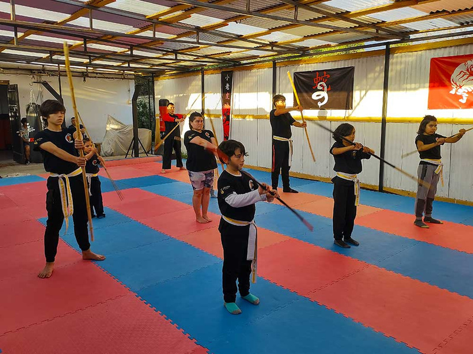
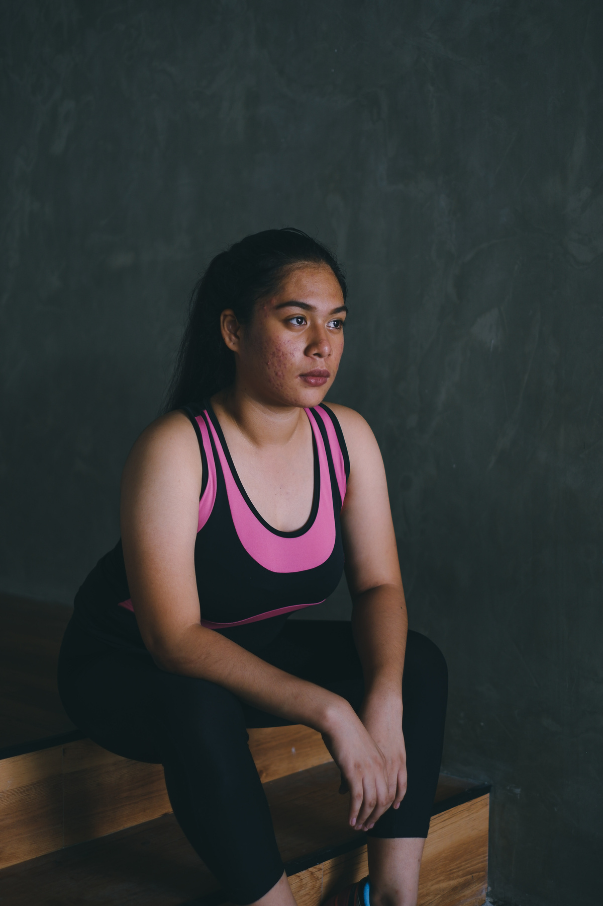
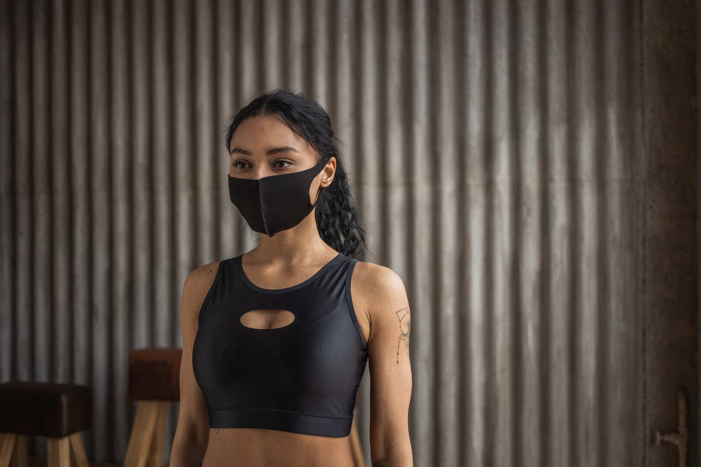

TÉCNICA · FORMA · ENERGÍA
Nuestros cursos
Descubrí las disciplinas de las artes marciales chinas y encontrá la que mejor conecte con vos.
ConsultarESCUELA SUPERIOR DE ARTES CHINAS · QUILMES
Disciplina para el cuerpo. Equilibrio para la mente. Un camino que se construye entrenamiento a entrenamiento.

SOBRE NUESTRA ACADEMIA
La Escuela Superior de Artes Chinas Tien Long Hu, fundada en 1991 por el Maestro Rubén Braun, preserva las enseñanzas tradicionales de las artes marciales chinas.
Su programa combina formas clásicas y modernas de Wu Shu, integrando técnicas de maestros internacionales para una formación completa y auténtica.
Conocé la escuelaNos comprometemos a brindarte una experiencia de entrenamiento que te ayude a crecer, a tu ritmo y desde tu punto de partida.

Descubrí las disciplinas de las artes marciales chinas y encontrá la que mejor conecte con vos.
Consultar
Aprendé junto a otros, compartí desafíos y construí tu progreso en equipo.
ConsultarUn espacio de trabajo adaptado a tu experiencia, tus tiempos y tus objetivos.
ConsultarLa constancia transforma
el esfuerzo en camino.
Cada persona empieza por un motivo distinto. El camino se vuelve propio con cada práctica.

“El curso de Tai Chi Chuan Forma 24 me ha transformado por completo. No solo mejoré mi flexibilidad y equilibrio, sino que también encontré paz y claridad mental.”

“Las clases de Wu Shu en la academia son increíbles. La energía, disciplina y técnica que enseñan aquí me han ayudado a superarme cada día.”
“Las clases personalizadas de Wu Shu han sido una experiencia única. El instructor se adapta a mi nivel y ritmo, lo que me ha permitido avanzar y perfeccionar mi técnica.”
TU PRÓXIMO CAPÍTULO EMPIEZA ACÁ
Vení a conocernos, preguntanos por las clases y encontrá tu lugar en la escuela.
Quiero más informaciónAv. 12 de Octubre 1000
Quilmes, Buenos Aires · Argentina